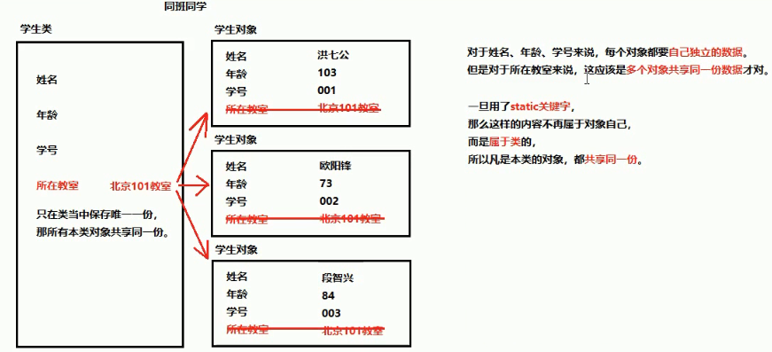
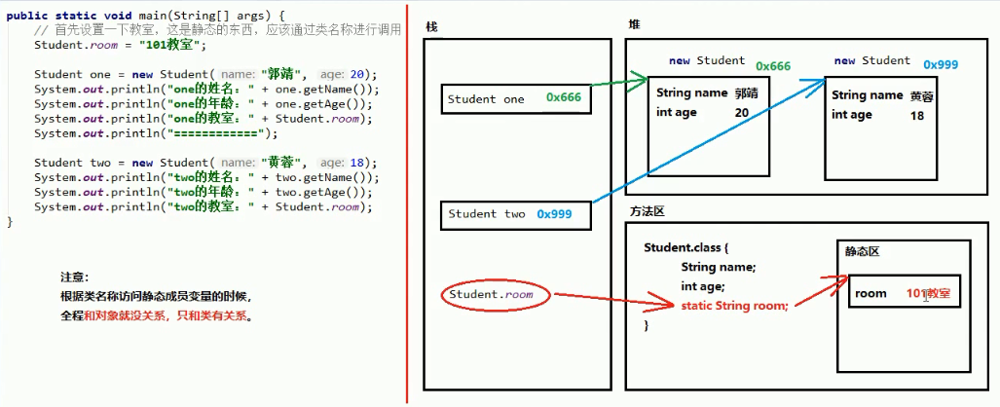

图解

//编写类
public class Student {
private int id;
private String name;
private int age;
static String room;
private static int id_Counter = 0;
public Student() {
//此处，前面加++代表先加在执行后面的内容，后面加++代表先执行在加上
this.id = ++id_Counter;
}
public Student(String name, int age) {
this.name = name;
this.age = age;
this.id = ++id_Counter;
}
public String getName() {
return name;
}
public void setId(int id) {
this.id = id;
}
public int getId() {
return id;
}
public void setName(String name) {
this.name = name;
}
public int getAge() {
return age;
}
public void setAge(int age) {
this.age = age;
}
}
//测试类
public class demo01staticField {
public static void main(String[] args) {
Student one = new Student("黄蓉", 38);
//静态在类运行时运行一次
one.room = "1903";
System.out.println(one.getName() + one.getAge() + one.room + "学号：" + one.getId());
//定义static静态方法的room(教室)，类里面的所有对象都可使用静态的room;
Student two = new Student("郭靖", 46);
System.out.println(two.getName() + two.getAge() + two.room + "学号：" + two.getId());
}
}
/*
一但使用static，那么将成为静态方法，不属于对象，属于类
没有static关键字，需要创建对象然后使用
有static关键字，可以直接使用类名称来使用
*/
/*
注意事项：
1.静态方法不能直接访问非静态。
在内存中先运行的静态，所以它不知道有成员
2.静态方法当中不能用this。
原因：this代表当前对象，静态方法代表的是类
*/
public class demo01 {
public static void main(String[] args) {
MyClass obj = new MyClass();//首先创建对象
//然后才能使用没有Static关键字的方法
obj.method();
//对于静态方法来说，可以直接通过类名称调用
obj.methodStatic();//正确，不推荐，这种写法编译后会变成"类名称.静态方法名();
MyClass.methodStatic();//正确，推荐
}
}